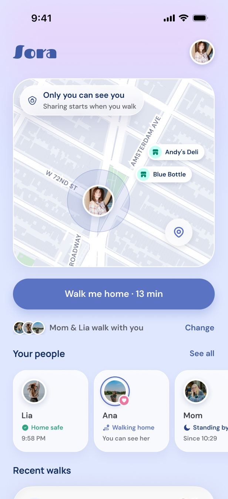
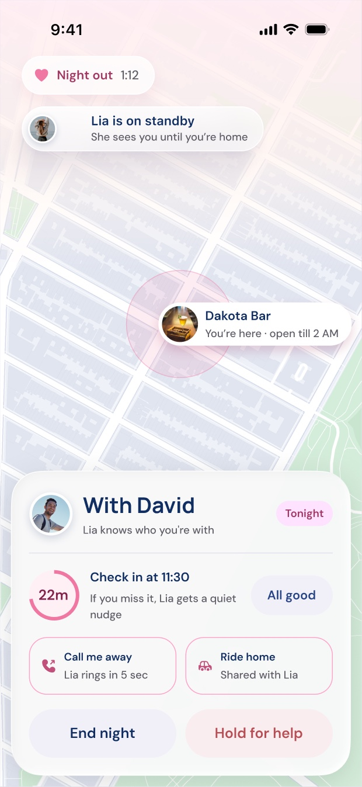
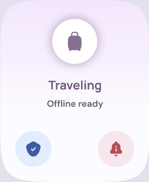
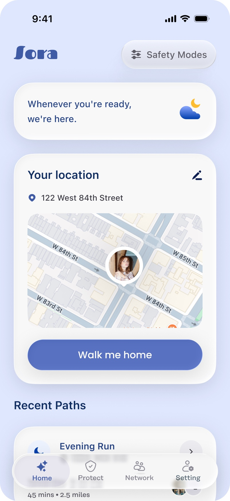

Safety companion for iPhone and Apple Watch
The friend who walks you home.
SORA shares her walk with the circle she chose, and only while she walks. When she gets home, sharing ends and the route is deleted.
- Red Dot Award Winner 2026
- MUSE Design Awards Silver


67%
Only 67% of women feel safe walking alone at night where they live.
Gallup Global Safety Report 2025
“Text me when you’re home.”
Women already look after each other: a text, a shared location, a friend on the phone until the door. Those habits work, but each one is manual, easy to notice, or left on long after the walk.
SORA keeps the habit and takes the work out of it. She picks a mode and taps once. Her circle comes along, and nobody is tracked once she’s home.
One walk, start to finish
Mei leaves a gig at 72nd Street. Home is 13 minutes away.
10:29PM
One tap: Walk me home. Until she starts, only she can see herself on the map.
She takes the busier way, with 9 places still open, and picks who walks with her: Mom and Lia.
Mom and Lia see her route until she’s home. Check-ins, messages and Hold for help sit in one panel.
Home safe. Sharing ends by itself and the route is deleted. Mom sends love back.
Only you can see you
Route deleted

Same friend, different nights.
Every mode keeps the same layout. Only the tint and the tools change.
01
Nightwalk
She picks the route and who walks with her. The busier way is suggested when more places along it are still open, and check-ins live on her wrist.


02
Dating & Nights Out
Lia knows who she’s with. “Call me away” and a ride home Lia can see are one tap away.


03
Commute
Quiet by default. Mom hears only if she leaves her usual way.


04
Traveling
Local emergency numbers, a help phrase in Japanese, and a map that works offline.
Help that doesn’t draw attention.
Showing distress can make things worse, so every way to get help is quiet.
Press and hold
Also quiet: Digital Crown double press · Fake call
Missed check-in · shown 10× faster
0:00
- 0:00Silent alert
- 1:00Audio deterrent
- 2:00Emergency services
“I’m OK” stops it at any step.
Location sharing is useful for a walk and risky as a habit. In SORA it starts when she walks, goes only to the circle she chose, and is deleted when she’s home.
Between walks, SORA shares nothing about where she is.
After dark
The same friend, after dark.
A deep Midnight blue instead of alarm black. The layout, tints and actions stay where she expects them, so opening SORA never raises her pulse.


Design language
One layout. Four tints. Three colors that never change.
Mode tints
- Nightwalk
#DCD1F3 - Dating & Nights Out
#FAEEF0 - Commute
#E2F3F0 - Traveling
#F0EAF7
Actions
- Walk me homeStart · #5C74C4
- Hold for helpHelp · #BC4C54
- I’m OKStop · #04846C
Type
Aa
Manrope for headings
Aa
DM Sans for text
Recognition
Recognized by international design juries.
Red Dot Award
Winner
View on red-dot.orgMUSE Design Awards
Silver
What changed since Red Dot 2026

Built by women, for women.
Four designers, one brief: a friend who walks you home.